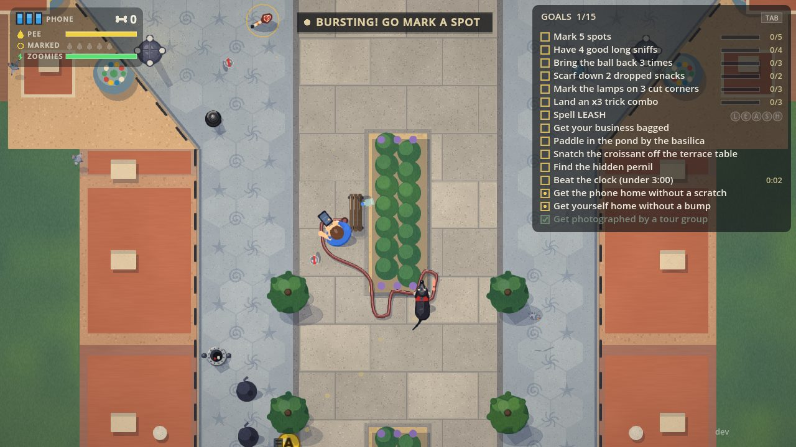
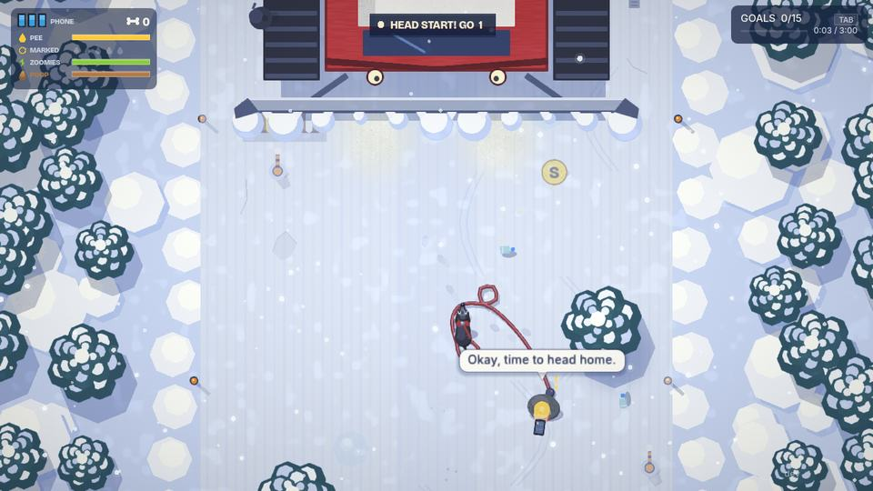

Press kit
Path of Leash Resistance. Everything here may be used in coverage of the game.
Description
Your human is glued to their phone and walking on autopilot. You are on the other end of the leash. Get them home in one piece, with the phone intact, while sneaking in as much dog business as you can get away with.
The leash is real rope physics. Your human outweighs you four to one and wins every straight tug, so you win the way a dog does: dig in at the right moment, wind the leash around a lamppost to hold them fast, and bark to stop them dead at the curb. Wind them around a pole and keep pulling, and they whirl off it like a tetherball. Get the timing right as a bike whizzes past and it counts as a save.
Your human answers the leash like a person. A steady pull leads them where you want to go. Haul on them constantly and their patience runs out: a glance up from the phone, a mutter, then "Hey!" and a shorter leash. Walk nicely and the reel lets you out. Everything they are about to do, they announce first: "Ring ring!", "Ooh!". They are never smarter than that.
Forty-two walks through a sunny, slightly chaotic Barcelona and its edges, each its own place: the neighborhood park, La Rambla with its crowds, the city park, Badalona's seafront and its pier, the dawn cleanup sweeper, old town alleys, Montjuïc, a covered market hall, a downpour, a floodable river park, the waterfall cascade and stone mammoth of La Ciutadella, the dog beach at Platja de Llevant, the cut-corner crossings of L'Eixample, Tibidabo's mountain road, an indoor vet clinic escape in El Veterinari, the old village of Sarrià at first light with the bells of Sant Vicenç, a forest trail, the skate plaza at Els Àngels, a chestnut festival, the wild boar trails of Els Senglars, tiled terraces, the play streets of La Superilla, the rush-hour metro under a rainy street in El Metro, the train station, the Civil War bunkers above the city, the arcaded Plaça Reial, Badalona's devil night with the Dimoni float in La Cremada, the seaside esplanade at El Fòrum, Avinguda Diagonal slicing across the grid with its tram, the pintxos bars of Carrer de Blai at night, the old water road along Collserola, the festival street of Festa de Gràcia, the cypress maze of Horta, the fishing harbor at El Port, the fountain avenue of Plaça d'Espanya, the walled village of El Poble Espanyol, the long pier of the airport's Terminal 1 with security on your tail, a work site, match day in Les Corts, a junkyard, the mountain trail at Montserrat with its wild goats, and, to finish, the Rambla del Raval, where a fat bronze cat climbs down off his plinth. Every walk ends off the leash, with tug-of-war, a frisbee and fetch (and an agility course in El Barri, pigeons to stalk in a plaça, waves to outrun at the dog beach, squirrels to tree in a woodland clearing): a dog park, a dog beach, a clearing in the woods, a yard, or a plaça with a fountain to jump in.
What happens on a walk changes how you feel, and how you feel changes how you move. A fright leaves you jumpy and half blind to smells, a good bark-off makes you barky, time off the leash brings on the zoomies, and running yourself empty leaves you flat. The ground matters too: grass and mud slow you down but hold far more scent than sidewalk, sand drags at your paws, and wet ground and snow make you skid.
Other dogs have lives of their own. They sniff and mark the posts you pass, and you can read who was there; meet one and it comes over to say hello, unless it is the grumpy sort, who lunges and barks at the end of its leash. Their owners are people too: on a call, carrying a coffee, stopping to type.
Every walk has its own list of goals: sniff the good spots, mark your territory, fetch, greet other dogs, herd a runaway friend home, take on dares from the characters you meet (each with their own tune), and pull off tricks: swing around a pole on the leash, run a figure eight, thread the needle between two people, and ride ledges and handrails with the zoomies. Earn stars to unlock new walks and bones to spend on collars, bandanas and coats.
Eight walks are chases: dragging your human home ahead of the street sweeper, racing the river surge on El Besòs, escaping the vet clinic in El Veterinari with clinic assistants giving chase with giant cones of shame, outrunning the wild boars down Els Senglars, keeping ahead of the correfoc's fire devils through Gràcia, outrunning the Dimoni's rolling firework float in La Cremada, getting out of the airport with security on your tail, and running down Montserrat ahead of the wild goats. Rain, wind, snow and night change how every walk plays, and everyone dresses for the weather. There is a three-part tutorial for anyone new.
Single player. No ads, no purchases, no account, and it plays offline. Keyboard or controller.
Facts
- Title
- Path of Leash Resistance
- Developer
- Santtu Nykänen (solo)
- Genre
- Top-down physics comedy
- Platforms
- Web browser (here and on itch.io), Windows (Microsoft Store and itch.io)
- Price
- Free. No ads, no purchases, no account, plays offline
- First release
- July 13, 2026 (itch.io); Microsoft Store from September 23, 2026
- Engine
- Godot 4.7, GDScript. Every picture is drawn in code and every sound is synthesized
- Input
- Keyboard, controller, touch in the browser
- Players
- Single player
- Language
- English, with place names in Catalan
Clips


Screenshots








Screenshots are 960x540 JPEG. Open one for the full size, or see every walk on the main page.
Icon
256x256 PNG.
Contact
Press contact to be added